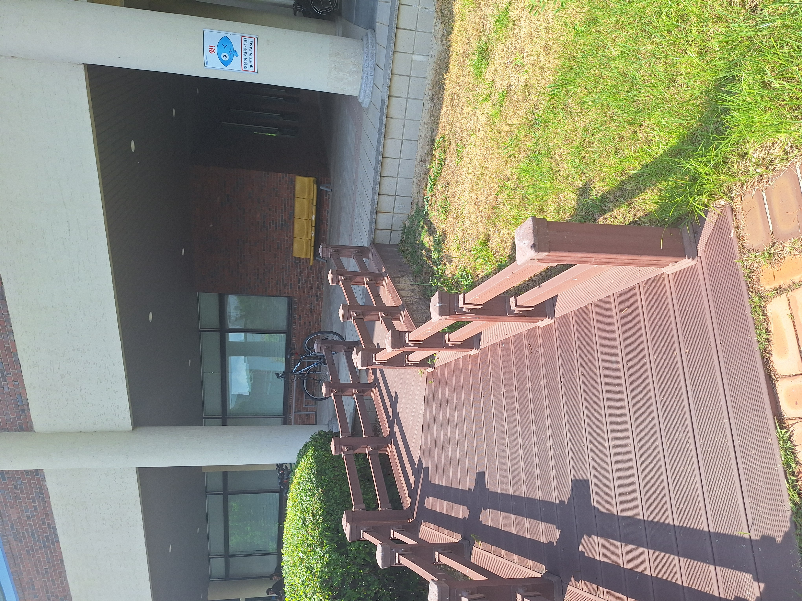
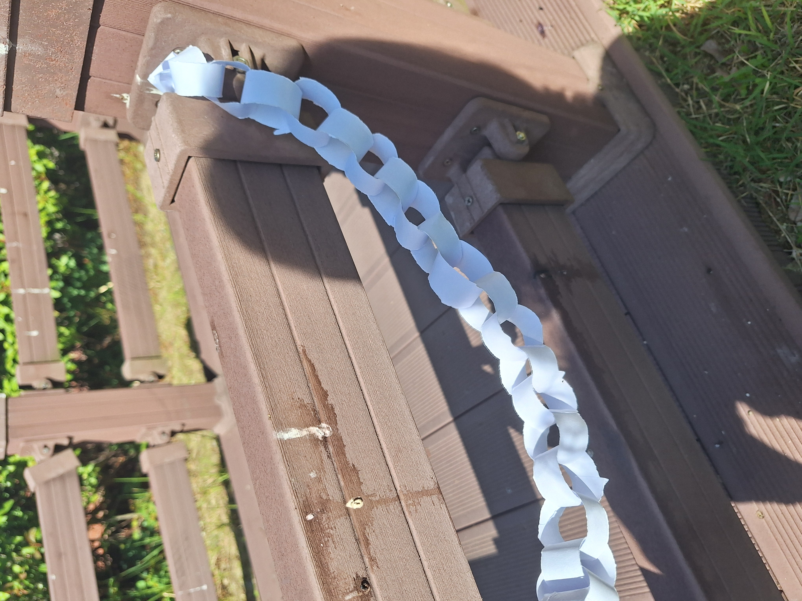
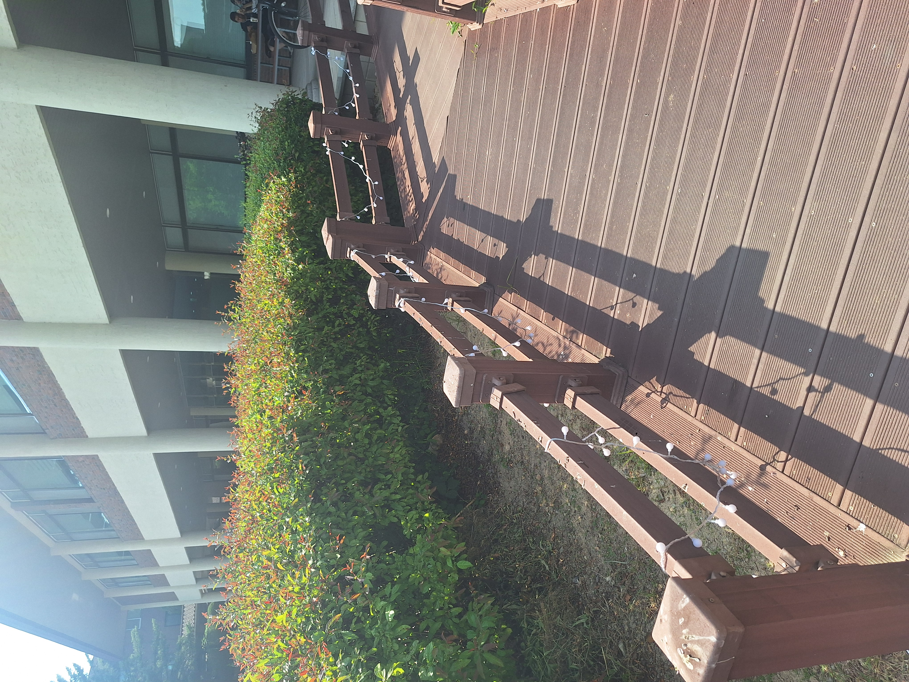
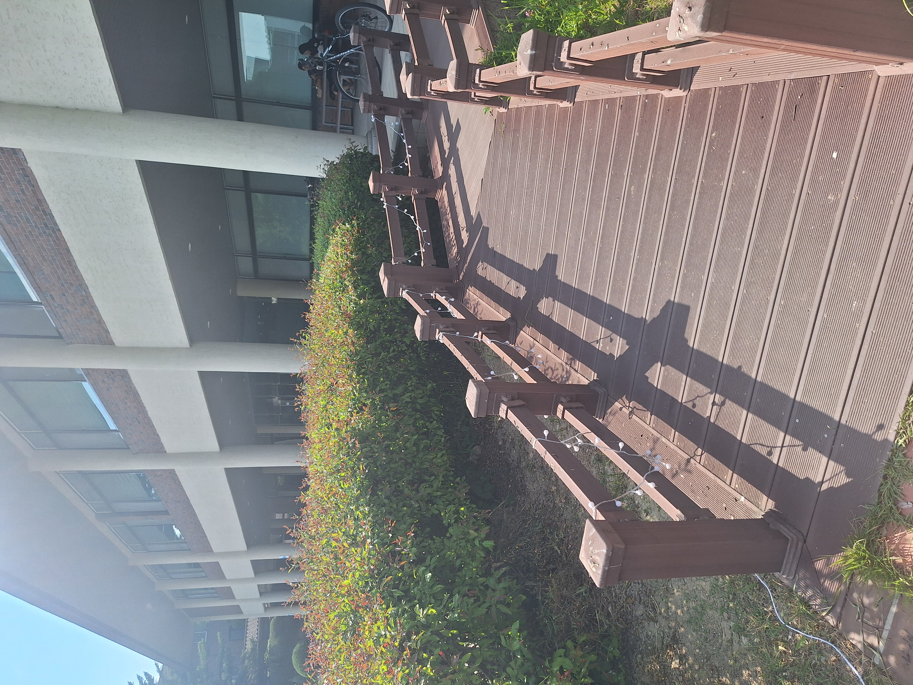
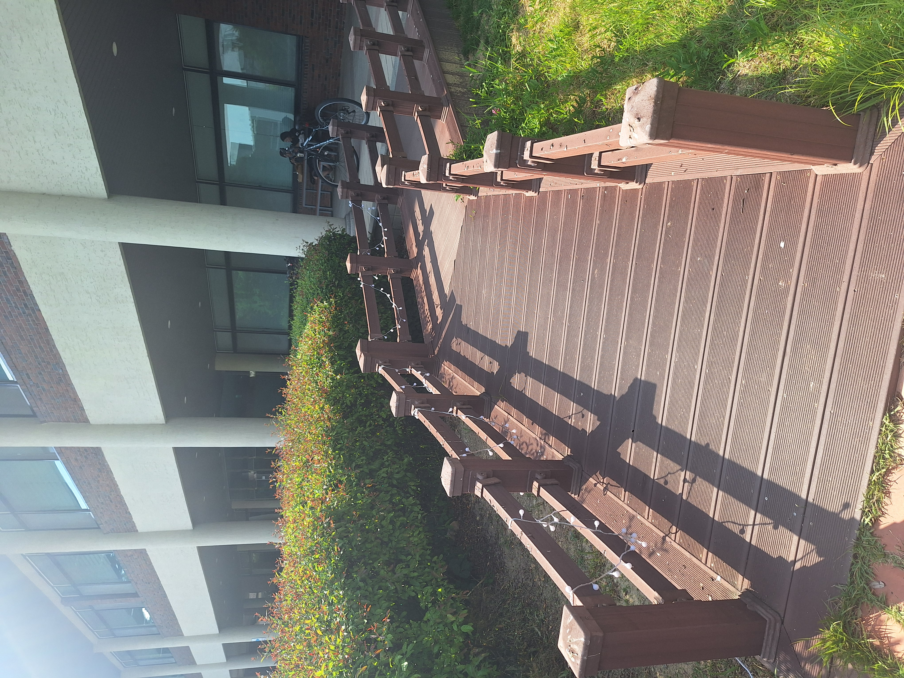

The bridge could be made more attractive and popular so that it is not used only as a bicycle ramp. Decorative elements such as artistic railings, colorful lighting, flower planters, or public art installations could encourage more people to stop, spend time there, and enjoy the space. These additions would make the bridge a more appealing landmark and a destination in its own right, rather than simply a functional crossing point.

At first I was trying out a kind of decoration on the railing, however it was made of paper so it wouldn't have lasted long.



My final idea was getting fairy lights. It made the bridge look whimsical and at night it would seem like you're in a fantasy world. What I would change is definitely that it should be battery powered and a bit longer.